City Hall, side by side
The approved Great Postal Vault and the same room in the regular game. Each capture keeps its own controls.
The floor porter in motion
Watch the porter walk, turn, and carry the post in both directions. Each excerpt uses the same fixed game camera for both versions.
Inspect individual poses
Lifting the first parcel
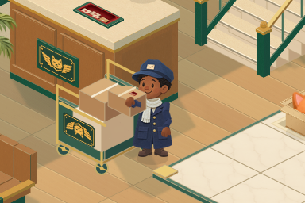
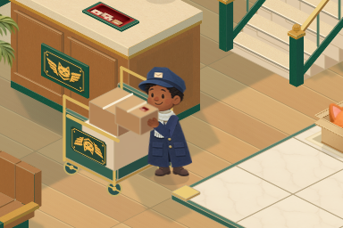
Carrying up and right, back visible
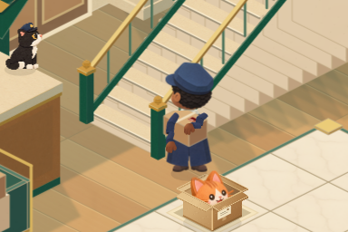
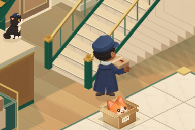
Turning
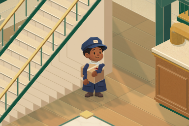
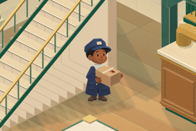
Carrying down and right, front visible
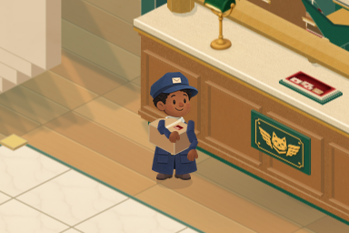
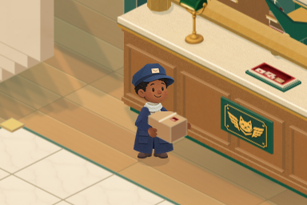
Setting down the first parcel
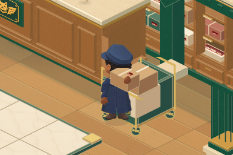
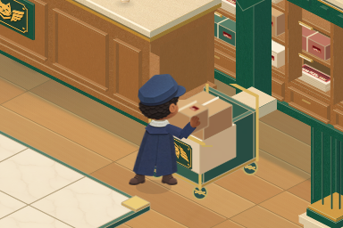
Pushing the trolley
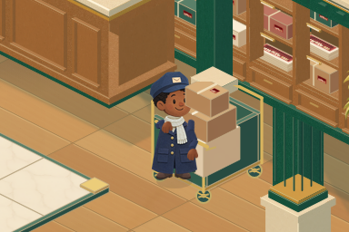
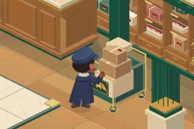
Picking up at the second trolley
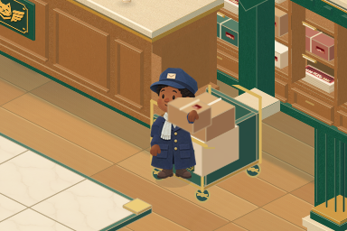
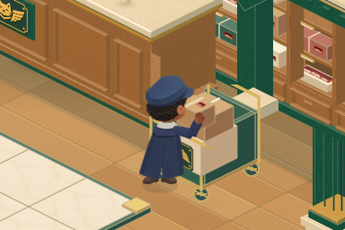
Carrying up and left, back visible
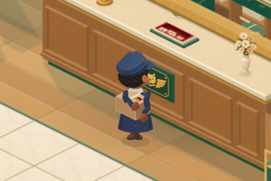
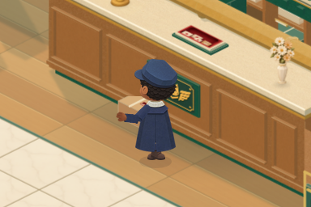
Carrying down and left, front visible
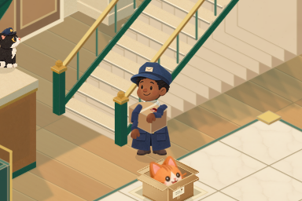
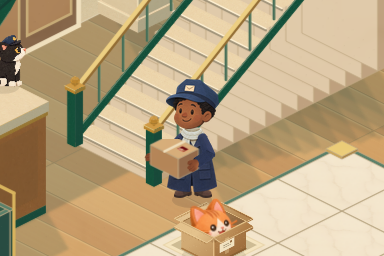
Setting the parcel down at the first trolley
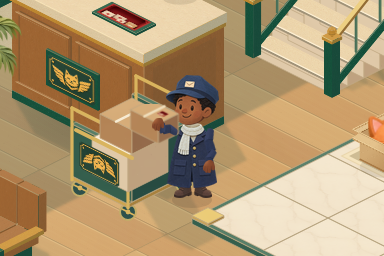
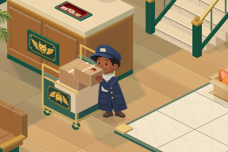
Revised City Hall and the approved standalone
The integrated game shows the revised floor porter and carried parcel. Each screenshot keeps its own controls. The measurements compare the two rooms at the same camera position.
Desktop, delivery 6–1
Room view at 1440 × 1000 CSS pixels. 4,315 of 1,440,000 scene pixels differ with the cameras aligned. With the workers hidden, 2,341 pixels differ.
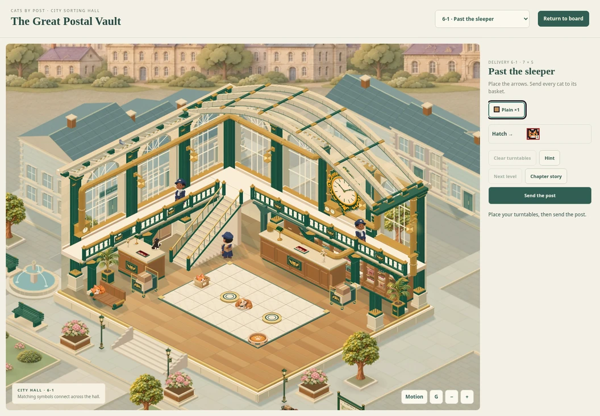
Desktop, delivery 6–15
Board view at 1440 × 1000 CSS pixels. 6,819 of 1,440,000 scene pixels differ with the cameras aligned. With the workers hidden, 0 pixels differ.
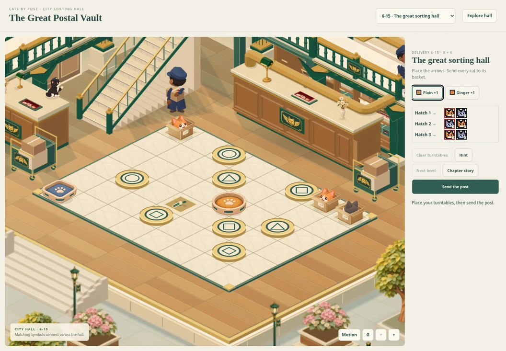
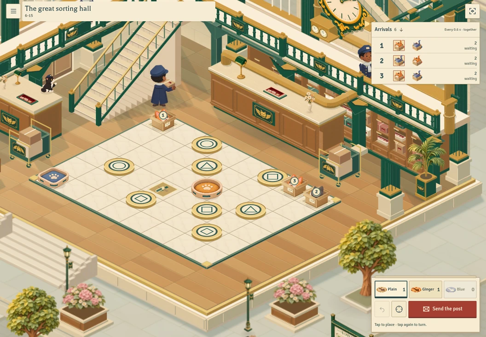
Phone, delivery 6–1
Room view at 780 × 1688 CSS pixels. 3,214 of 1,316,640 scene pixels differ with the cameras aligned. With the workers hidden, 1,239 pixels differ.
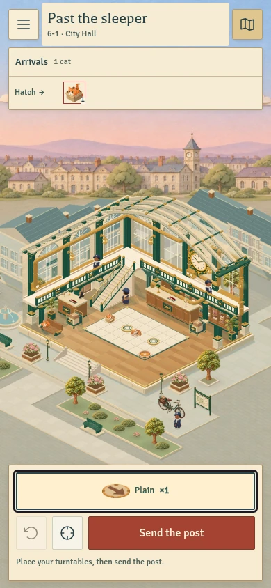
Phone, delivery 6–15
Board view at 780 × 1688 CSS pixels. 5,855 of 1,316,640 scene pixels differ with the cameras aligned. With the workers hidden, 0 pixels differ.


Stair and gallery rail
The gold stair rail crosses in front of the green gallery rail. 0 of 26,075 crop pixels differ.


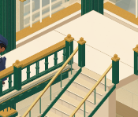
Floor porter and stair
The porter passes in front of the foot of the stair. The integrated crop shows the revised figure. 778 of 26,075 crop pixels differ.


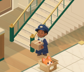
Gallery worker and rail
The balustrade covers the lower half of the passing gallery worker. 1,468 of 26,075 crop pixels differ.


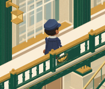
Places and delivery letters

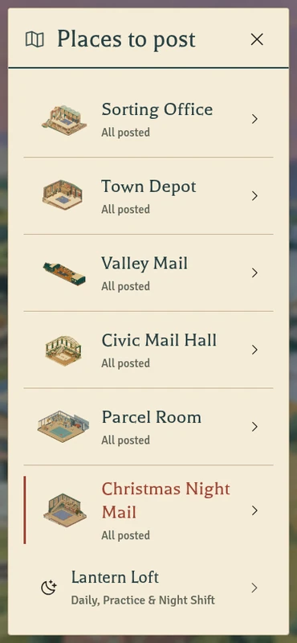

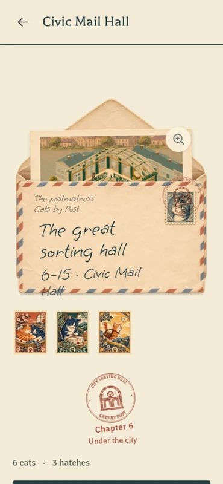
Previous integration comparisons · web-3e6dd53f459e
These seven pairs and their measurements were captured before the floor porter revision. Previous capture measurements.
Desktop, delivery 6–1
Room view at 1440 × 1000 CSS pixels. 2,341 of 1,440,000 scene pixels differ with the cameras aligned.


Desktop, delivery 6–15
Board view at 1440 × 1000 CSS pixels. 0 of 1,440,000 scene pixels differ with the cameras aligned.


Phone, delivery 6–1
Room view at 780 × 1688 CSS pixels. 1,239 of 1,316,640 scene pixels differ with the cameras aligned.


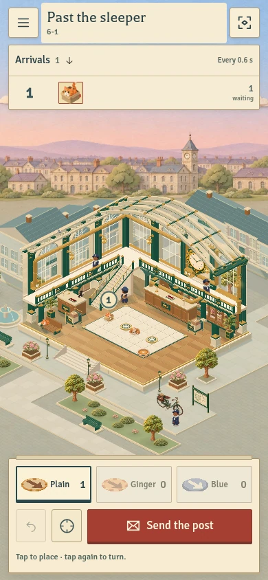
Phone, delivery 6–15
Board view at 780 × 1688 CSS pixels. 0 of 1,316,640 scene pixels differ with the cameras aligned.

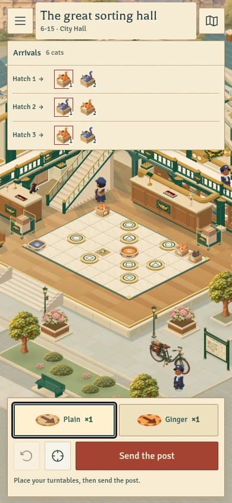

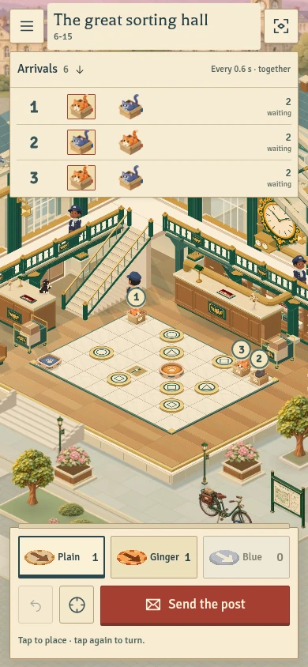
Stair and gallery rail
The gold stair rail crosses in front of the green gallery rail.


Floor porter and stair
The porter walks in front of the foot of the stair.

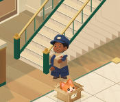

Gallery worker and rail
The balustrade covers the lower half of the passing worker.


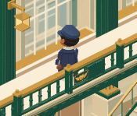